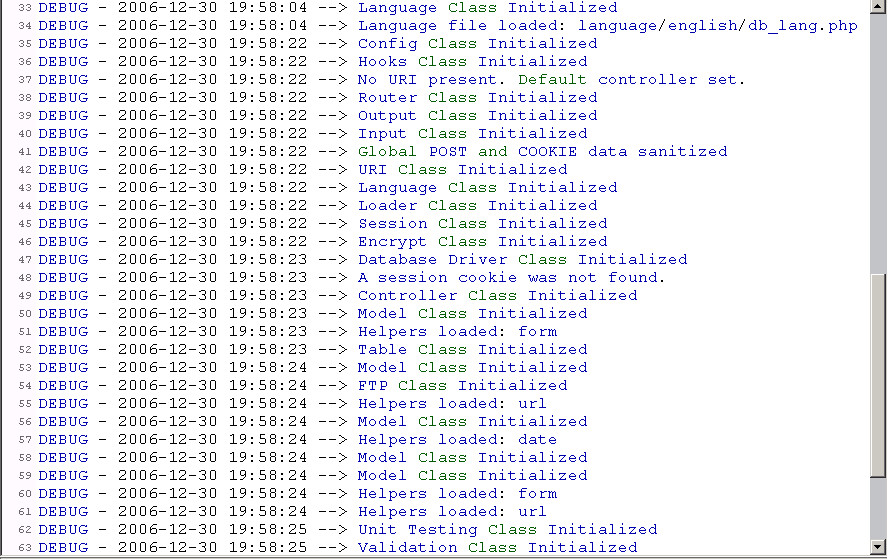
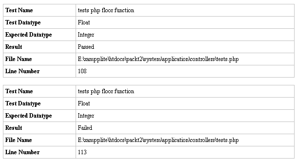
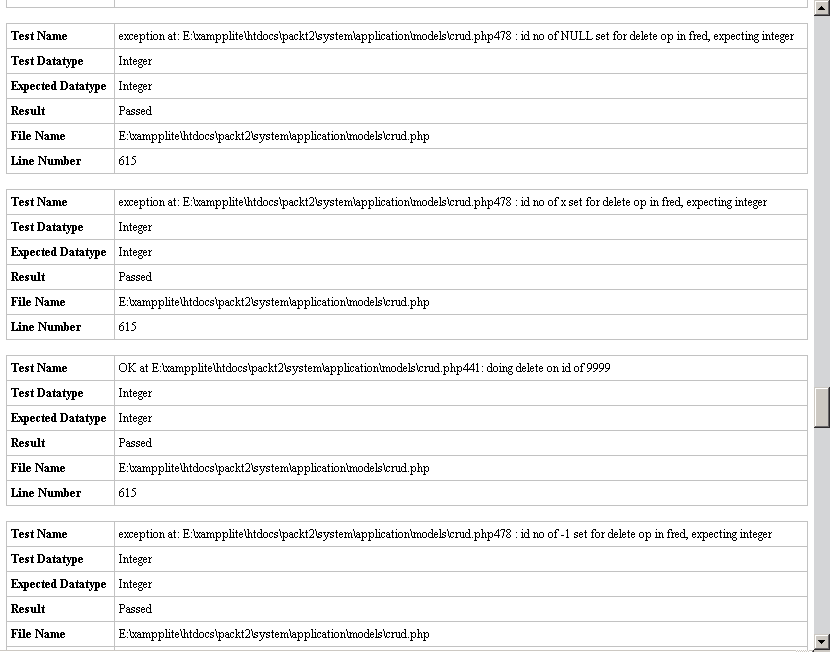
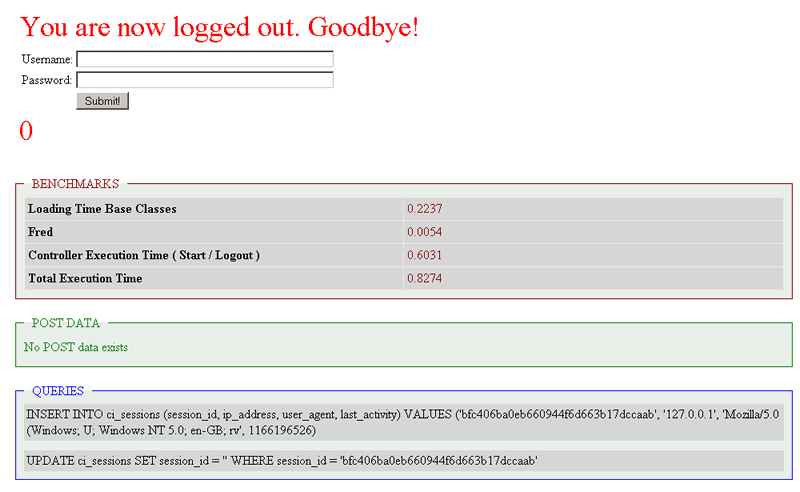

第八章 用 CI 测试你的代码
这一章介绍 CI 如何帮助你测试代码。 测试是一个应用程序的核心。 我们用它测试其他的远程应用程序; 我们也想要测试它自己, 因为它本身也是代码。 CI 使测试变得很容易。
不过,“测试”的含义很广泛，因此我们从两种主要的测试类型之间的差异开始，分析一下你应该如何开展测试工作。
我们来看看 CI 类如何帮你测试代码:
- 单元测试
- 基准测试
- “评测器”
- CI 提供你在数据库还没数据的时候进行测试的方法
8.1 为什么测试，为谁测试？
有关测试已经有很多的文献。 它已经变成一种必要的技术。 复杂程序需要一支测试员组成的队伍来测试软件。 而且 '测试驱动开发' 的概念是你在写下你的第一行代码之前首先设计你的测试程序, 然后把你编写的代码交给它们。
与此相反的另一个极端，许多程序员不做任何的系统测试。因为测试似乎太困难，烦人并且花费大量时间。也许我们会做几下测试，然后希望其它的都工作正常。
CI 提供一些方法使测试变得容易。 或者可以说-更有乐趣。
有两种主要的测试类型:
- 单元测试：采取“由下而上的”的方法。他们查看你的一个代码块，比如说一个函数,把一些变量放进去，看看它是否返回正确的结果。
- 端到端测试：这些是“由上而下的”。他们把重心集中在某件事上，看系统能不能做到。举例来说，他们试着登录到你的网站(使用一个有效的用户名称和密码) 看看系统是否正常工作。 (甚至他们会试着使用一个无效的密码登录…)
如你看到的，它是一种不同的理论。 单元测试, 不关心测试结果; 而完整测试只关心结果，不考虑代码是否正常工作。
重要的事情是要考虑你为什么要测试。什么让你最担心? 什么最有可能出毛病而且使你困窘? 你希望从你的测试中获取什么信息？仅仅是好或不好，还是更多的细节? 对每个应用, 你能负担多少时间编写测试代码并进行测试?
我们正在开发我们的测试网站，不过当我们编程时，我们需要测试我们的代码。 当然，我们试着预期用户要做的每件事, 和可能出现的每种情形。 单元测试在很多方面是有用: 设计测试方法帮助你改善代码的设计。
一旦我们的代码上传到一个服务器上，它的数据量一天一天地增大超过我们的控制。最坏的事情是导致客户发现错误信息或者空白的荧屏, 而且期待你在忙着其它事情时来解决问题。这就是为什么我们正在创建这个网站, 去测试其他的远程网站。
CI 能帮助我们检测网站，看是否发生如下的事情:
- 第一, 我们已经预期多种可能出问题的情况。 举例来说，我可能通过ID来做一个数据库查询，删除记录。是的，它可以工作: 我实际这样操作同时也是测试它。 但是发生了什么事：如果-不知何故-代码在调用一张不存在的表？或是ID号有问题? 或根本没有什么ID值? 这是单元测试有帮助的地方。
- 第二, 当我在别的地方写更多代码的时候, 我的第一部分的代码是否按我的要求工作，或者我已经不经意地修改了一些第一部分代码所依赖的部分？再一次地，给单元一个测试。他们也能定期地帮助我们检查产品服务器(包括它的所有部件，例如：如果数据库在一个分离的服务器, 将不需要做一般性的 'ping' 检测!)
CI 给你许多帮助, 无论你处在什么情况下。 它不提供一个功能测试的类，但是你能使用其他 PHP 代码做这个测试。 但是让我们先看一下CI如何捕获你代码中的错误。
8.2 CI 的错误处理类
CI 有它自己的检测和报告错误的系统。 一方面，这些是最简单和最普通的测试: 他们是那些有帮助的(或者令人发怒的)信息：当你正在编写代码时并且它不正常工作的时候，你会看到这些信息。
默认地， CI 在屏幕上显示所有的错误。 另一个选择是不报错; 不显示出错信息会让你无法处理，因此，报错对调试是必要的。 全部的行为由 index.php 文件控制, 代码如下：

/* |--------------------------------------------------------------- | PHP ERROR REPORTING LEVEL |--------------------------------------------------------------- | | By default CI runs with error reporting set to ALL. For security | reasons you are encouraged to change this when your site goes live. | For more info visit: http://www.php.net/error_reporting | */ error_reporting(E_ALL);
这是一个 PHP 指令，表示报告所有的错误。 为了要关掉错误报告, 把最后一行改为:
error_reporting(0);
这会适合在产品网站上使用，它抑制所有的出错信息。
CI 有三个函数、 show_error() 、 show_404() 和 log_message(),控制错误如何在你的系统上被显示。 (不同寻常地，这些函数是全局性的: 你不需要装载就能使用他们,用就行了!)。 事实上， show_error() 和 show_404() 通常默认产生; 前一个在屏幕顶端的一个整洁的小 HTML 格式的框子中显示你的错误; 后一个在你企图请求一个不存在的网页时显示一个'404'页。
第三个函数,log_message(), 更有趣。你可能想要开发你自己的错误日志，原因有多种多样的，其中一个是也许因为你不能访问在你的ISP的Apache上的日志文件。 首先, 你需要设定权限确保 /system/logs目录是可读写的。 然后你在config文件中设定logging的级别:
/* |-------------------------------------------------------------------------- | Error Logging Threshold |------------------------------------------------------------------------ | | If you have enabled error logging, you can set an error threshold to | determine what gets logged. Threshold options are: | | 0 = Disables logging | 0 = Error logging TURNED OFF | 1 = Error Messages (including PHP errors) | 2 = Debug Messages | 3 = Informational Messages | 4 = All Messages | | For a live site you'll usually only enable Errors (1) to be logged | otherwise your log files will fill up very fast. | */ $config['log_threshold'] = 4;
这样会开启日志。
如果你修改 index.php 关闭错误信息显示并不会使错误日志不工作。 因此你能看到信息，但你的用户看不到。
当你开启日志后， CI 每天产生新的记录文件, 并把信息写入这个文件。 但是小心, 这些记录文件能快速地变得很大。

在实际使用过程中，你可能需要开发在某件事发生时显示特定出错信息的错误处理代码。
8.3 CI 的单元测试类
现在让我们开始做一些适当的测试工作: 检测你的代码能否在不同的环境之下工作。
CI 使单元测试类和它的其它类一样简单。 你以这装载它:
$this->load->library('unit_test');
然后, 为每个测试准备三个变量：
- $test—实际的测试内容, 一般是一个 PHP 表达式
- $expected_result—你期待的结果
- $test_name—你想要显示的测试名称
针对 PHP 函数 floor() 的两个测试列在下面。(floor()是PHP的取整函数） 注意到第一个预期的结果是正确的; 第二个是错误的。 (一个故意的错误)：
$test = floor(1.56); $expected_result = 1; $test_name = 'tests php floor function'; $this->unit->run($test, $expected_result, $test_name); $test = floor(2.56); $expected_result = 1; $test_name = 'tests php floor function'; $this->unit->run($test, $expected_result, $test_name);
增加:
显示结果作为带格式的 HTML:

如果你想要你的系统分析或者保存它, 使用:
返回一个你能使用的二维数组:
Array (
[0] => Array
( [Test Name] => tests php floor function
[Test Datatype ] => Float
[Expected Datatype] => Integer
[Result] => Passed
[File Name] => E:\myfile.php [Line Number] => 69 )
[1] => Array
( [Test Name] => tests php floor function
[Test Datatype ] => Float
[Expected Datatype] => Integer
[Result] => Failed
[File Name] => E:\myfile.php
[Line Number] => 73 )
)
因此现在我们有一个得到测试结果的简单方法。
除了简单的等不等于这样的测试(floor(1.56)是不是等于 1?) CI的单元测试类也测试数据类型（is_string 、 is_bool 、 is_true, 等等。-完整的清单在用户手册中）。你可以把下面的表达式：
$expected_result = 1;
替换成:
$expected_result = 'is_float';
测试过程和前面的一样。
如果你在你的代码各处放上这样的测试代码，它可能会运行得很慢, 而且将会在你的屏幕上显示所有的诊断。 但是你能让它停下来。 只要简单地把下列的代码加入你的构造函数:
$this->unit->active(FALSE);
而且 (令人惊喜地) 如果你将FALSE改成TRUE, 信息将再度显示，你甚至能动态地这样做。
8.3.1 什么时候使用单元测试
事实上很少有人会去测试一个PHP的内置函数。但是用来测试你自己的函数是有价值的。观察它们是否可以返回正确的结果，需要担心的主要有：
- 他们的表现完美吗？
- 但是如果用户想在其他环境下运行, 它还能正常工作吗？
- 或你将会写更多的代码, 或修改现有的代码, 造成你自己的函数不能正常地工作。
有时, 出错是是由于编程问题引起的, 所以我们可以用编程来捕捉和修改错误。你能在用不同参数进行测试的过程中获得乐趣。
让我们回到我们那个运行一个数据库查询删除指定ID值的记录的那个例子。如果下面情况出现它会做什么:
- ID是NULL，或者没有给出值？(特别地重要地，你可能偶然地删除表中所有的数据。)
- ID不是一个整数? ("x", 举例来说?)
- 身份证是一个整数, 但是超出范围 (你在你的表中有 1000个记录，但是ID是1001?)
- ID是一个负整数?
诸如此类，想出不同测试条件是有趣的。
在单元测试中把这些参数放进函数, 并看看结果。 当然，结果可能和你预料的一样。第一个情形和第二个情形会报错。 你应该修改以阻止它发生。因此执行后，单元测试不能通过。
我们定义我们要从每个测试中得到的结果，如果结果和我们设定的一样，测试就通过。但是如果在测试过程中，程序抛出一个异常，后面的代码不再执行，我们如何能够让单元测试完成呢？这就要求我们必须先保证程序没有语法上的错误，让函数能够执行所有的代码。毕竟，单元测试不是用来对付语法错误的，这是PHP环境的工作。
上述假设的第三个情况是ID超出范围，这不是一个代码错误，数据库能安全地处理这种情况。但是，你可以在把查询发给数据库之前做一定的检测工作。或者你也可以让它运行一下，因为有可能会使数据库返回一个出错信息，因此你需要用自己的错误信息来代替系统给出的信息，比如“对不起，现在系统正忙，无法提供服务 ”。
8.3.2 单元测试的示例
让我们编写一些代码测试这个 '删除' 函数。 我已经建立了一个 '删除' 函数 (放在一个model中) 以便我们来测试它, 如果单元测试失败返回$dbvalue上.
if ($test == 'yes') { $place = __FILE__.__LINE__; $dbvalue = "exception at $place: sent state value $state to trydelete function "; return $dbvalue; }
如果测试是成功的, 一个简单的循环后在$dbvalue返回'OK'. 测试代码很简单。首先，我们建立一个ID值的数组和我们期待的结果。换句话说，如果我们试着删除一个ID值为 '' 或者 'abc' 的身份证，系统应该抛出异常, 如果ID是 1, 或 9999, 系统应该接受它作为一个有效的ID, 它将返回‘OK’.
因此数组的键名是你给定的测试条件而值是你期望函数返回的结果。
$numbers = array( '' => 'exception', 'NULL' => 'exception', 'x' => 'exception', '9999' => 'OK', '-1' => 'exception', '1' => 'OK' );
现在使用下列的代码循环传递$numbers数组的每个元素给CI的单元测试类来做所有的测试。
测试将运行 $this->delete() 函数, 记录你要删除的'fred'表中的记录和ID值 ($testkey).
foreach($numbers AS $testkey => $testvalue) { $dbvalue = $this->delete('fred', $testkey); $result .= $this->unit->run(preg_match("/$testvalue/", $dbvalue), 1, $dbvalue); }
记住，CI 单元测试允许你提供三个参数:
- $test: 对于每个数组的键, 我们把$testkey作为参数调用删除函数, 数组的键就是给出的ID值。函数返回一个值。(在这里称为$dbvalue)。 我们的$test将使用regex比较那个值, 我们期待它是$testvalue,数组中键对应的值。 (它包括 'OK' 或 'exception'?)
- $expectedresult 是 '1', 因为如果我们的代码是正确的，我们期待 regex 找到一个匹配。 我们希望 'NULL' 返回一个“exception”而‘1’返回“OK”。
- $testname: 这个参数是可选项: 它是测试返回的字符串, 用来解释我们进行什么测试，用什么参数
你可以从结果中看到, 所有的的测试都返回'passed', 因此我们可以对我们的代码有信心了。 (测试结果和预期结果的数据类型都是整数，即使我们的输入可能不是整数, 因为测试实际上是一个正则表达式的比较, 返回 1 或者 0).

充满乐趣, 实际上也相当有用, 测试结果存放在数组中。
例如, 如果ID是一个数字，如果不是一个整数会有什么结果，用上面的测试，试验：
'3.5' => 'exception',
看看结果是什么？
结果会让你感到惊讶(我也是)：这个测试没有得到预期的结果，它显示你的函数将把3.5当作一个函数。 理由是 PHP 做一种松散的'相等' 测试; 如果你在这种情况下要得出正确的结果，你需要把比较设为'严厉'模式。 为了要设定这个模式, 使用:
$this->unit->use_strict(TRUE);
8.4 CI 的基准测试类
这个类让你测试从一点运行到另一点所需要的时间。 你在开始测试的地方插入一行代码:
$this->benchmark->mark('here');
在代码的另一行插入：
$this->benchmark->mark('there');
然后你插入第三行，告诉你执行的时间:
$fred = $this->benchmark->elapsed_time('here', 'there');
然后你能打印结果， $fred, 或做任何你想做的事情。
基准测试可以使用你喜欢的任何的名字，只要它们是不同的, 而且你能设定很多组。你能使用这些测试看看是否你的代码执行需要太多的不正常的时间。 如果你的页面装载时间太长，你可以插入一些基准测试识别符来测试引起延迟的代码块。
对于我们的网站监控应用的测试, 我们对执行时间不是太感兴趣。当我们在英特网上登录进网站时，我们希望他们的速度是可接受的。每次执行时间略有长短其实没有多大意义。然而，如果我们在一些连续地测试同一个追踪基点，我们可能注意到它会有变化: 这会为我们找到问题的原因提供一些线索。 一个数据库查询可能费时很多; 可能是我们的主机工作状态不是很稳定。因此为为了达到我们的目标，我们将会采集 $fred 的内容, 并存放在数据库中。
8.5 CI 的评测器类
profiler 类非常精彩，你在你的类的一个函数中插入一行代码（它在构造函数中工作，因此放在那里才有意义.) 这行代码是:
$this->output->enable_profiler(TRUE);
如果你改变主意了, 你可以修改它:
$this->output->enable_profiler(FALSE);
插入这行代码得到的回报，就是你能在你的屏幕上得到一个完整的报告。显示CI超级对象和你的控制器的时间花销以及$_POST数组和数据库查询等等所用的时间。在开发阶段，这个特别有用。
如果你加上你自己的基准测试，它也会显示这些。 你必须使用特别的名字命名你的基准测试-他们必须包括在"_start"和"_end"中，每一组的命名都要不一样：
$this->benchmark->mark('fred_start');
并且, 还有：
$this->benchmark->mark('fred_end');

你能见到，在这两个基准点之间的时间间隔被表示为'fred'.
8.6 用“模拟”数据库来做测试
动态网站是围绕着数据库工作的。 如果你正在测试它们，你应该测试你的代码是否能真正修改一个数据库。端到端（双向测试）测试这样做: 举例来说，如果你的测试是你能否用正确的用户名/密码组合登录，你可能需要读一个数据库并实际这样操作。
但是测试你能否更新,插入, 或是删除一个生产数据库上的数据是危险的, 因为它会破坏你的真实数据!
记得： CI 可以声明超过一个数据库, 而且可以容易地在他们之间切换，见第四章。 使用这个功能，你可以很容易地建立一个模拟数据库, 然后增加,改变, 并且在它里面删除数据。
你也能使用 CI 建立并且删除表、或可能根据你的主机和权限建立和删除数据库。CI的:
$this->db->query('YOUR QUERY HERE');
函数让你运行任何 SQL 查询, 包括有点像这的:
$this->db->query('CREATE TABLE fred(id INT, name VARCHAR(12), INDEX(id))');
能创建一个新表，或者像：
$this->db->query("INSERT INTO fred VALUES (1, 'smith')");
将插入一行数据到fred表中。
因此, 通过几行代码， CI 让你建立模拟数据进行完整的测试,在不需要的时候删除这个模拟数据库。 你可能针对delete()函数进行几次单元测试，看看这个函数在有不同ID值时是否正常工作。
现在你正在超越简单的单元测试。 如果我们进行在我们的表中删除数据的单元测试，我们需要检查这些数据是否真的删除了。这容易地用下面的代码实现, 再使用 CI 的单元测试类。和它的AR类:
$test = $this->db->count_all('fred'); $expected_result = 0; $test_name = 'tests number of entries left in table after unique entry removed'; $this->unit->run($test, $expected_result, $test_name);
$this->db->count_all 把计算表中所有的结果，而且我们知道那里现在应该没有任何结果。你能容易地使用这种代码检查'插入' 操作, 看看是否在操作后会有一个记录保存在表中。
因为这是虚拟数据, 我们特别地为测试而生成的，我们完全地知道该期待什么，而且做什么都没有关系。 只是记得在测试后要把系统恢复到产品数据库上，否则会得到奇怪的结果。
8.7 控制和时间安排
测试是应用程序的心脏, 因此重要的不是要不要测试，而是如何让测试有效。
你应该记得在第四章我们有一个建表的SQL文件，有一个表名叫tests，另一个表叫events，每次网站在进行一次测试运行时，它会在tests表中寻找两个字段：frequency和last_done. 如果frequency中的值是“hourly"，我们就再检查"last_done，如果当前这个小时内没有做过测试，我们就启动测试，然后更新它的 last_done字段为本次测试的时间。
测试完成后，程序在events表中插入一条记录，这里会插入测试过的网站ID，和各种各样其它的测试结果信息。这一张表提供我们网站和我们的客户网站的统计数据，挑出个体测试, 或一个给定网站的所有测试, 等等。
我们在这一章稍早的时候讨论的benchmark类还有一点没有涉及到: 当你针对一个类似上面谈到的函数进行测试的时候，放入基准点进行计时是一个好主意，你可以得到测试花费多少时间的数据。把时间保存到events表中，那里有一个字段timetaken，这是一个浮点类型放入测试花费的秒数。如果定期地评估测试用时可能会得出很多结论，比如如果花时较长，有可能是ISP超负荷运行，或者你的网页有太多的内容，还或者是你的网站变得十分出名，流量大增，你需要增加你的带宽。
不管哪种方法, 经常地测试会让你及早地发现事故苗子，及早地排除故障。
8.8 总结
我们已经在测试上花费了很多时间。它不是最让人激动的内容, 但是如果你们正在开发网站, 测试是保证你晚上睡个安稳觉的好方法。
我们已经见到 CI 如何处理错误, 如何显示出错信息，但是当你的网站正式开始运行后你可以关闭它们(或者停止日志操作)。
我们看了如何操作CI的单元测试工具。 我们也看了benchmark，它能简单地统计任一代码块之间的运行时间。
profiler是一个在你编写代码时用来显示许多信息的相当棒的工具。CI提供了一系列开发测试你代码的好工具。
我们还学习了使用模拟数据库调试数据库交互部分代码的方法，它不会破坏你的生产数据库。
我们还能CI整合一些外部代码, 让我们创建网页机器人进行远程网站的完整功能测试。